單元導覽：從生命起源到演化
- 這一單元要解決什麼問題？先看生命如何起源，再研究生物如何演變、如何留下證據，以及族群的遺傳變化。
- 本篇先處理生源說與無生源說的爭論，以及化學演化；後續再看演化觀念、證據和族群遺傳學。
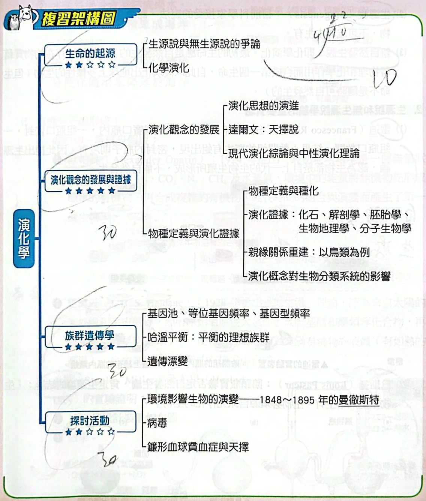
第5單元複習架構圖原講義PDF第51頁・印刷第161頁・點圖放大
生命從哪裡來：三種說法
- 這節要釐清：生物是否能由沒有生命的物質直接產生？
- 自然發生說又稱無生源說：生物除了能由同類生殖，也能由爛泥或腐肉等無生命物質產生。亞里斯多德（Aristotle）和凡赫芒（Jan Baptista van Helmont）認同此說。
- 生源說（biogenesis）是目前科學家接受的說法：生物來自原先存在的生物，不能無中生有。
- 新自然發生說即化學演化：最初的生命由自然界物質經物理、化學作用形成，之後才演化出多樣生物；這不代表生命隨時都能自然發生。
生源說與無生源說的實驗
- 這節要問：肉上的蛆和肉汁中的微生物，是憑空出現的嗎？
- 雷迪（Francesco Redi）將不同的肉放入八個廣口瓶，一組瓶口密封，一組敞開。敞開組有蛆，密封組沒有，因此支持生物來自上一代生物的生源說。
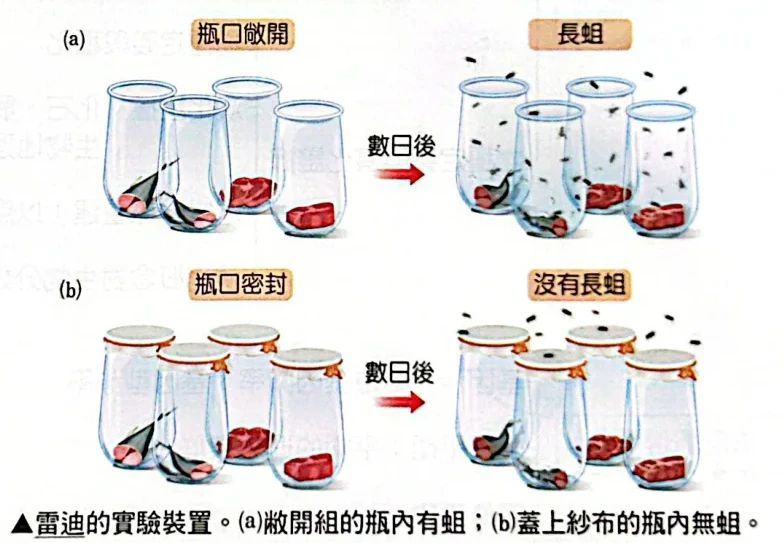
雷迪的實驗：敞開與封閉瓶口的比較原講義PDF第52頁・印刷第162頁・點圖放大
- 巴斯德（Louis Pasteur）做鵝頸瓶實驗。瓶中盛肉汁，瓶頸做成 S 型，加熱至沸騰，殺死瓶中微生物。
- 肉汁冷卻後，水汽凝結成的水聚集在 S 型底部，使空氣內外無法流通，所以瓶中沒有微生物出現。
- 把瓶頸折斷後，外界空氣進入，瓶中就出現微生物。因此否定自然發生論，肯定生源論。
- 結論：生物不能無中生有，必須源自原先存在的生物。
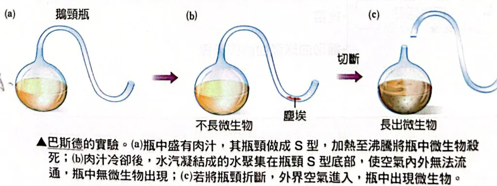
巴斯德的鵝頸瓶實驗原講義PDF第52頁・印刷第162頁・點圖放大
化學演化：原始環境與原生湯
- 這節要問：最初的有機物可能如何產生？化學演化可能在約 40 億年前已開始。
- 原始大氣含 N₂、NH₃、H₂、H₂S、CO、CO₂、CH₄ 和水蒸氣，沒有 O₂。水蒸氣冷卻凝結成雨，積成溫度很高的海洋；大氣成分也隨雨進入海洋。
- 歐帕林（Alexander Oparin）1924 年提出：無氧環境中，H₂、CO₂、N₂、CH₄ 與水蒸氣等無機物，經環境能量作用先形成簡單有機物，再形成複雜有機物，經長時間組合和演變產生第一個生物。
- 火山、隕石的高溫、強烈閃電和太陽輻射可提供能量，讓海洋中溶解的氣體形成葡萄糖、胺基酸、脂肪酸、核苷酸等小分子有機物。
- 霍爾丹（J. B. S. Haldane）1928 年提出原生湯理論：太陽紫外線與宇宙射線照射原始還原性大氣，產生胺基酸、醣類等，逐漸在海洋累積；海水像充滿有機物的熱湯，生命在其中形成。
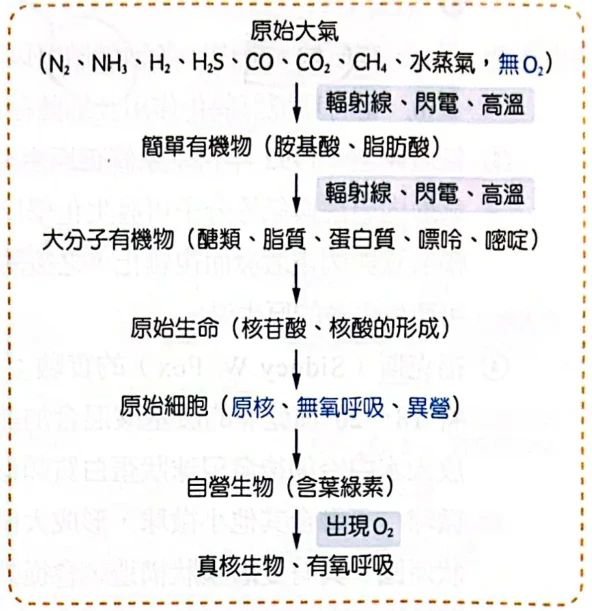
原始大氣到原始細胞及後續生物的示意原講義PDF第53頁・印刷第163頁・點圖放大
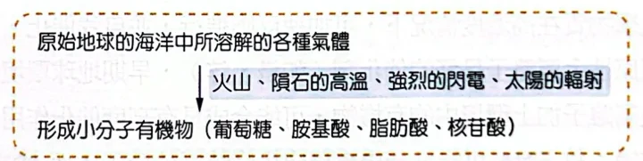
原始海洋中小分子有機物的形成原講義PDF第53頁・印刷第163頁・點圖放大
實驗與模型：有機物和微球
- 這節要問：模擬早期地球的條件，能產生什麼？
- 米勒（Stanley Miller）與尤里（Harlod Urey）於 1953 年設計裝置，將類似原始大氣的 CH₄、NH₃、H₂、H₂O 加熱、電擊；一星期後分析，得到 7 種胺基酸和有機酸。
- 結論：原始大氣的氣體能互相作用形成複雜有機化合物。當時缺少氧化作用及細菌，有機物可在海洋中愈積愈多。
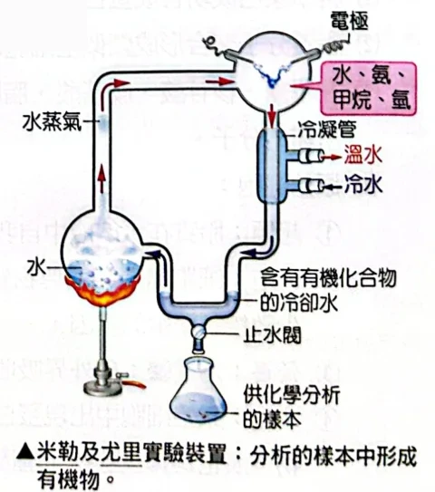
米勒及尤里實驗裝置原講義PDF第53頁・印刷第163頁・點圖放大
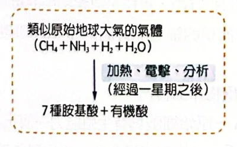
米勒與尤里實驗的原料及結果原講義PDF第53頁・印刷第163頁・點圖放大
- 氣泡模型：1992 年科學家修正原生湯假說。海底火山氣泡上升時，甲烷與氨等分子反應；氣泡在海面破裂後，產物受輻射線與閃電激發而複雜化，再隨雨回到海洋。反覆循環後形成可能產生生命的原生湯。
- 福克斯（Sidney W. Fox）在 1960 年把 18～20 種乾燥胺基酸混合加熱至熔點，再放入水中冷卻，得到球狀蛋白質類似物，稱微球。
- 微球可融合其他小微球，形成大微球。
- 微球形狀渾圓，有雙層膜狀構造，會吸收外界物質、生長與分裂，所以類似沒有內容物的細胞。
- 脂質在水溶液中可自我組合成脂質體，即脂肪分子聚合成類似空細胞的脂肪小球，也可能是原始細胞的起源。
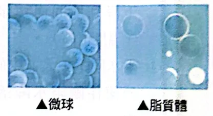
微球與脂質體原講義PDF第54頁・印刷第164頁・點圖放大
RNA、DNA 與原始細胞
- 這節要問：能複製的分子與細胞可能如何出現？催化是加速化學反應；自我複製是產生自身的複本。
- 生物學家認為早期 RNA 可自我複製、自我修飾，並依自身核酸序列組合胺基酸，形成特定構造的蛋白質。
- 闕克（Thomas Cech）發現某些 RNA 具有酵素功能。化學物質在高濃度時可加速反應並自我催化；還原性金屬離子如鐵、鋅是好的催化劑，早期地球可能很充裕，與環境有機物結合可能形成高度催化的化合物。
- 結論：RNA 可能是最先表現生命特徵的分子；DNA 可能在反轉錄病毒出現後才陸續出現。
- 科學家尚未合成原始細胞，但已合成蛋白質膜和能自我複製的化學分子。單醣、核苷酸、胺基酸和脂肪形成後，原始地球逐漸產生細胞構造所需的分子。
- 原始細胞可能源自脂質體，具有簡單細胞膜和少數控制繁殖的基因；它是異營，即吸收外界小分子有機物作為食物。
- 原始細胞出現蛋白質和 RNA，取得生殖能力，之後演化為原核生物、真核生物；基因突變很普遍，先出現異營生物，再出現自營生物。
- 格陵蘭 38 億年前岩層含可能是生命痕跡的有機物；澳洲南部海岸 35 億年前岩層有類似單細胞生物的化石，疊層藻類似藍綠菌。今日絕大多數自然環境已無法促使無機物進行有機演化。
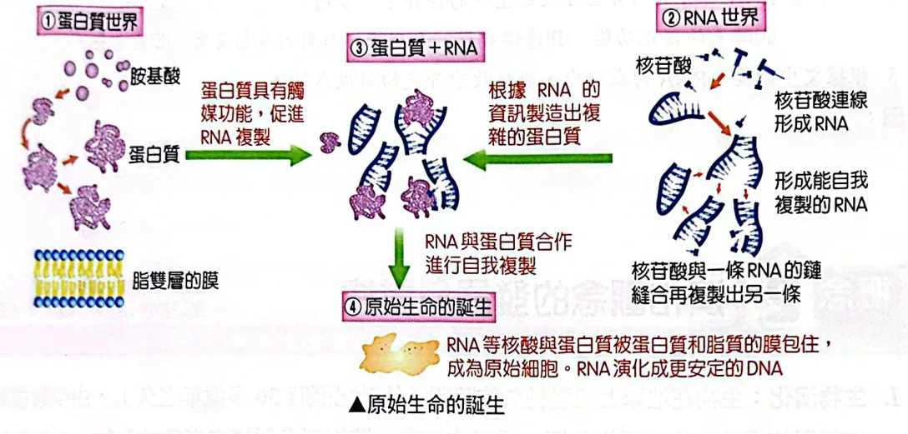
蛋白質世界、RNA 世界與原始生命的誕生原講義PDF第55頁・印刷第165頁・點圖放大
經典演練：生命起源題組 1–5
- 這節要運用原始環境、RNA 與氧氣變化，閱讀題組並推理。
地球上初期形成的生物應具備何種特性？
(A)嗜高溫、異營 (B)嗜高溫、自營 (C)好氧、異營 (D)厭氧、自營。
看答案與詳解收起
答A。
解- 原始海洋溫度很高，而初期生物利用海洋中累積的有機物，所以是嗜高溫、異營。
- (B) 自營與利用現成有機物不符；(C) 原始大氣缺氧；(D) 雖然早期缺氧，自營卻不符合題組所述。
小結原始生物利用現成有機物，並生活在高溫、缺氧的環境。
下列有關地球上生命起源與演化的敘述，哪些正確？（多選）
(A)先發生在海洋，然後到陸地 (B)生源說可說明地球最早的生命的起源 (C)DNA是地球上最早出現的遺傳物質 (D)大氣中氧濃度逐漸累積後，使地球上生物的代謝歧異度增加 (E)族群中遺傳變異的發生是演化的必要條件。
看答案與詳解收起
答A、D、E。
解- (A) 正確：依原始海洋形成及生命起源的描述，生命先在海洋出現，後來才到陸地。
- (B) 錯誤：生源說說明生物來自原有生物，無法解釋第一個生物的來源。
- (C) 錯誤：RNA 可能比 DNA 更早表現生命特徵，DNA 較晚才出現。
- (D) 正確：題組指出氧增加後，有的生物避居貧氧環境，有的演化出有氧呼吸等代謝方式。
- (E) 正確：遺傳變異提供後代可繼承的差異，族群才有演化的材料。
小結生命起源推測與現有生物的生源說不同；氧氣增加後代謝方式變多。
下列敘述何者正確？
(A)紫外光可能會妨礙 RNA 的聚合化 (B)受紫外光照射到的 RNA，可能被激化後能和其他分子作用，因而形成雙股螺旋狀 (C)三十七億年前有臭氧層的保護來擋掉紫外光 (D)受紫外光照射到的 RNA，促進聚合化，因而形成鏈狀。
看答案與詳解收起
答D。
解- (A) 錯：題文提出紫外光可能促進而非妨礙聚合。
- (B) 錯：題文說可能形成長鏈，沒有說形成雙股螺旋。
- (C) 錯：題文說當時沒有臭氧層保護。
- (D) 正確：依題文，紫外光可能促進 RNA 聚合形成鏈狀。
小結依題文，強紫外光可能促進 RNA 聚合成長鏈。
RNA 具有下列哪些可成為生命的條件？（多選）
(A)酵素的催化功能 (B)遺傳複製 (C)突變 (D)對刺激起反應 (E)能生長。
看答案與詳解收起
答A、B、C。
解- (A) 正確：某些 RNA 具有酵素的催化功能。
- (B) 正確：早期地球上的 RNA 可自我複製。
- (C) 正確：複製時序列可發生改變，形成可遺傳的變化。
- (D) 錯：題文描述紫外光對化學反應的影響，不能據此認定 RNA 具有生物對刺激的反應。
- (E) 錯：聚合成長鏈不等於生物個體的生長。
小結RNA 可具有催化、複製與序列變異等生命相關特徵。
根據文中敘述，RNA 的成分中，能吸收紫外光的組成為何？
看答案與詳解收起
答鹼基。
解- 題文指出鹼基可化解紫外光的傷害，保護骨架中的醣類和磷酸。
- 因此依文意推得吸收紫外光的組成是鹼基。
本篇整理
- 這節整理最初生命的可能來源與支持生源說的實驗。
下一篇接著看演化觀念與機制，理解生物如何隨時間改變。
核對原講義全頁（生物2 PDF51–56）
對應印刷161–166頁：PDF51為單元封面與架構圖，PDF52–55為概念1與經典演練，PDF56僅取概念2之前的題目。此題組書上無附答案，依題文與正文推導；部分原圖與手寫筆記重疊。
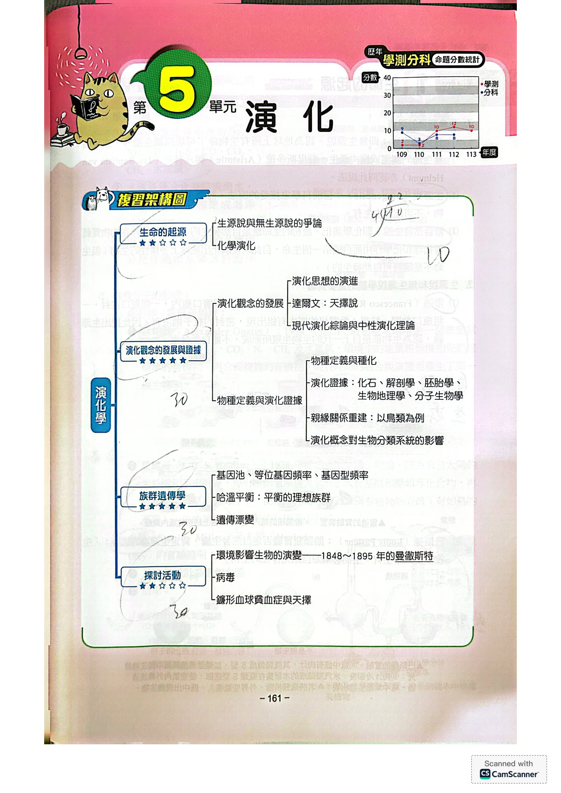
PDF第51頁／印刷第161頁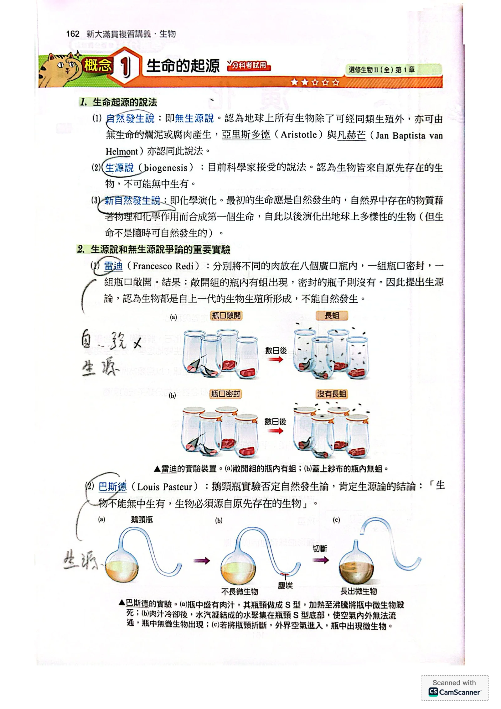
PDF第52頁／印刷第162頁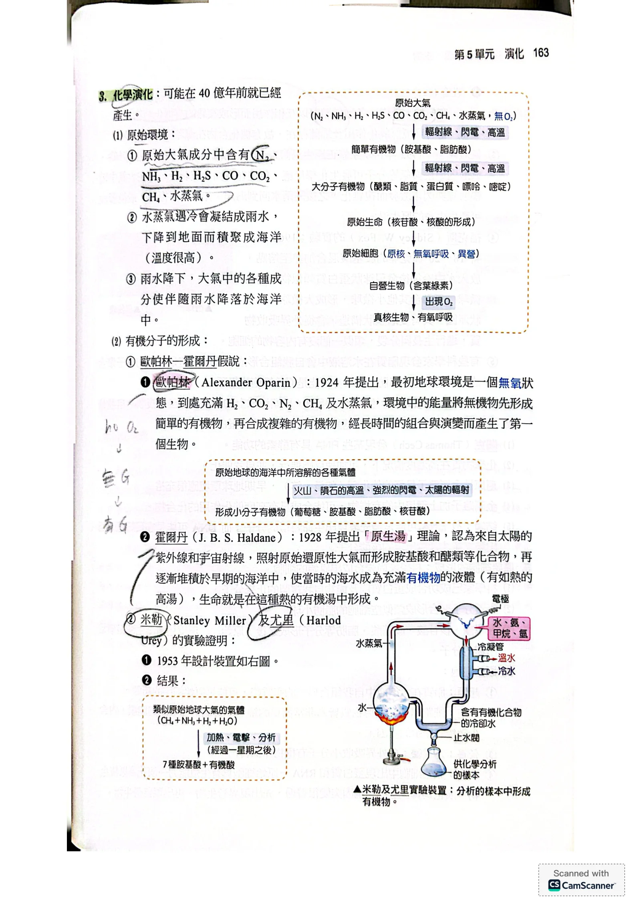
PDF第53頁／印刷第163頁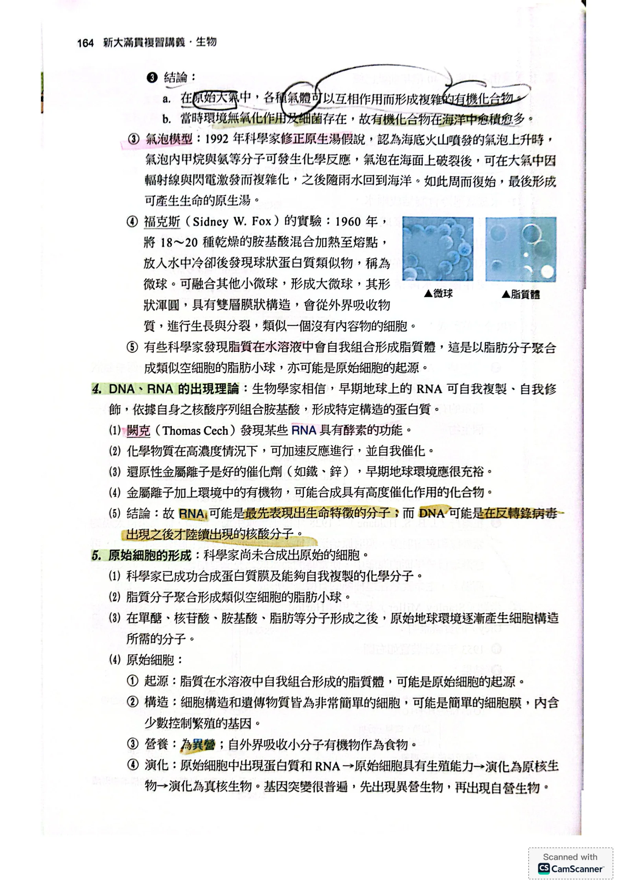
PDF第54頁／印刷第164頁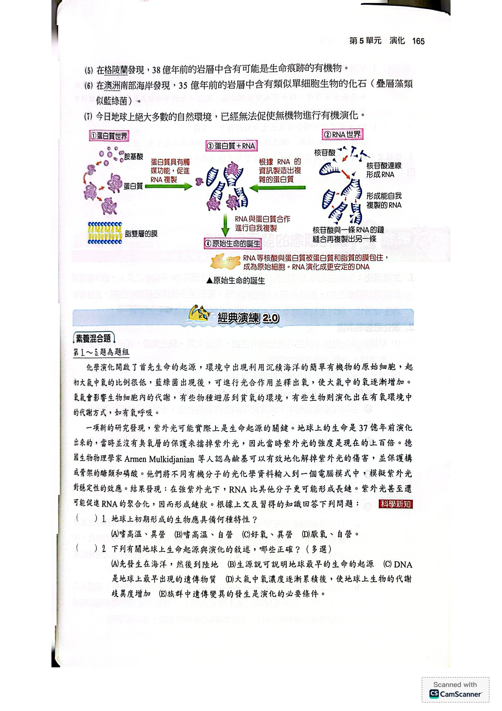
PDF第55頁／印刷第165頁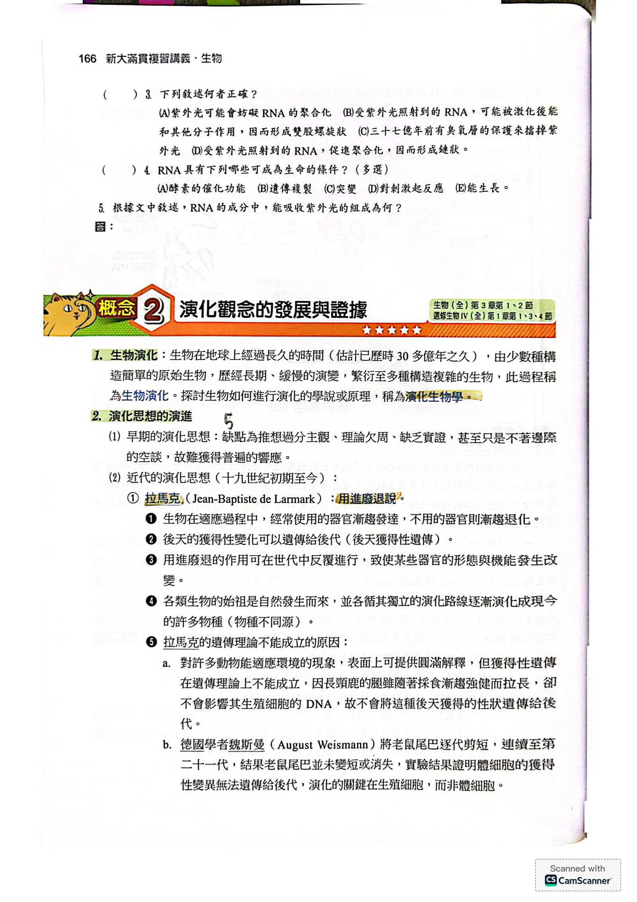
PDF第56頁／印刷第166頁